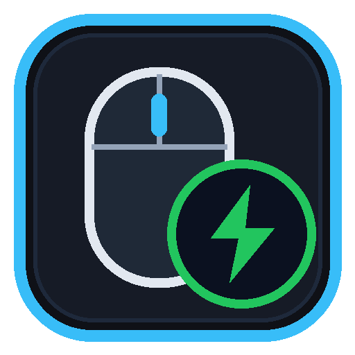
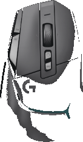

Live System Tray Battery
Always-visible color-coded battery percentage in your Windows taskbar tray with instant charging status.

Mouse Battery & Control v2.29.0A tiny, ad-free Windows tray app that shows your wireless mouse battery right by the clock, learns how fast your battery drains, warns you before it dies, and puts mouse speed & DPI controls one click away.

G502X PLUSDesigned to stay quietly in your taskbar until you need it — no bloated driver suites or logins.
Always-visible color-coded battery percentage in your Windows taskbar tray with instant charging status.
Records real active-use sessions to project hours left, chart battery history, and estimate battery health.
Sends native Windows notifications at low/critical thresholds or when your mouse won't last through the evening.
Adjust Windows pointer speed, scroll speed, and left/right buttons for any mouse — plus live DPI, polling rate, and onboard profiles for Logitech HID++ mice.
Follows your Windows theme and accent color cleanly, with high readability, drag-to-reorder tabs, and EN / RU languages.
Starts directly from its folder with no temp unpacking, keeps all history local, and offers optional Google Drive backup.
Takes under 30 seconds — no complex installer wizard needed.
Click Download from GitHub above (or open the latest release page) to save MouseBatteryControl.zip (~19.6 MB). Optional SHA-256 checksum:
Right-click MouseBatteryControl.zip → Extract All… into a permanent folder such as Documents\MouseBatteryControl. Keep MouseBatteryControl.exe and the _internal folder together.
Double-click MouseBatteryControl.exe inside your extracted folder. The window opens and a battery badge appears in your system tray.
Open the Notifications tab and toggle Start with Windows on so it quietly monitors your mouse every time you turn on your PC.
Because this is a free personal utility without a paid Microsoft developer certificate, Windows may show “Windows protected your PC” the first time you open it. Simply click More info → Run anyway.
Yes! It supports Bluetooth / BLE mice (including Windows battery reporting) and Logitech wireless mice (via G HUB or direct USB receiver). Non-Logitech mice get battery tracking (when the mouse reports battery to Windows) plus Windows pointer & scroll tuning, while Logitech HID++ mice also unlock DPI, polling rate, and onboard memory controls.
No. Between short polls it stays asleep in the background using practically zero CPU, and the unpacked app starts nearly instantaneously without extracting temp files.
Never unless you explicitly connect Google Drive backup yourself. Settings, battery history, and action logs stay strictly inside your app folder as readable JSON/JSONL files.
New versions are published on GitHub Releases. Download the latest MouseBatteryControl.zip there, or set "update_source": "github:Aleksa75/mouse-battery-control" in config.json for automatic in-app updates via Check for Updates.